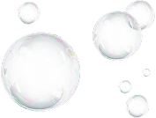

.png)
01BALANCE
素肌を、静謐へと調律する。
洗うという行為を、ただ落とすための時間で終わらせない。
石鹸由来の洗浄力を芯に、 ベタイン系を含む複数の洗浄成分を重ねることで、泡立ち、清浄感、そして洗い上がりのやわらかさを美しく均衡させました。
余分な汚れだけをほどき、うるおいを奪いすぎない。 その精緻な調和が、肌を本来あるべき静けさへと導いていきます。



肌と心が出会う瞬間。ここから始まる。
触れる前から、やわらぐ
こすらないという選択
残るのは、静けさ
このボディシャンプーは、
その体験を「五つの要素の調和」として設計しました。
五つの要素が、静かに表現する構造。

洗うという行為を、ただ落とすための時間で終わらせない。
石鹸由来の洗浄力を芯に、 ベタイン系を含む複数の洗浄成分を重ねることで、泡立ち、清浄感、そして洗い上がりのやわらかさを美しく均衡させました。
余分な汚れだけをほどき、うるおいを奪いすぎない。 その精緻な調和が、肌を本来あるべき静けさへと導いていきます。


肌に求められるのは、単一の保湿ではなく、
重なり合ううるおいの層。
グリセリンやトレハロースの潤いに、アルガンオイル、
シアバター、ヒアルロン酸Naを重ね、
水分と油分が響き合う保湿設計を描きました。
洗い流したあとの肌には、静かな艶の余韻が残ります。


真に上質なうるおいとは、
与えるだけでなく、逃がさぬことまで設計されているもの。
その思想のもと、セラミドとビタミンC誘導体を配合しました。
肌がうるおいを抱え込みやすい状態へ整え、
乾燥によって揺らぎやすいコンディションにも穏やかに寄り添います。
その静かな強さが、肌の品格をそっと守ります。

清潔感とは、強く香らせることではなく、余計な濁りを残さないことから生まれるもの。
茶葉エキス、炭、アミノ酸を軸に、清浄補助成分を丁寧に重ねました。
洗い上がりに残るのは、過剰な演出ではなく、
静かに磨かれた清潔感の余韻です。
清潔感とは、強く香らせることではなく、余計な濁りを残さないことから生まれるもの。
茶葉エキス、炭、アミノ酸を軸に、清浄補助成分を丁寧に重ねました。
洗い上がりに残るのは、過剰な演出ではなく、静かに磨かれた清潔感の余韻です。
ベルガモットの澄んだ光からはじまり、
ミューゲ、マグノリア、ヒヤシンスの花々がほどけ、
やがてサンダルウッドの穏やかな深みへと移ろいます。
華やかに主張する香りではなく、
立ち去ったあとに残る余韻。
その静かな香りが、
肌に品格を纏わせます。
STEP 1
目安は1〜1.5プッシュ。過不足なく満たすことが、調和のはじまり。
STEP 2
空気を含ませたやわらかな泡が、肌をそっと受け止める。
摩擦を感じさせない所作が、穏やかな洗い上がりへ導く。
STEP 3
きめ細かな泡が、不要なものだけを洗い流し、必要なうるおいはそっと残す。
泡の余韻を、やさしく受け止めるために。
L'ejade専用タオルをお届けします。
やわらかな繊維が肌をいたわり、
最後の所作まで、調和を保つ。

ラグジュリアスハーモニー
L'ejade Body Soap
L'ejadeは、“肌への敬意”を込めて成分を選択しています。必要なものだけを選び抜き、過剰な刺激を与えない設計。

単なる無添加ではなく、
“肌への敬意”から生まれた処方思想です。
よくあるご質問
L'ejadeでは、肌への心地よさに配慮し、洗浄力・pHバランス・配合成分の設計を丁寧に行っています。シア脂やアルガンオイルなどの保湿成分を配合し、乾燥しがちな洗い上がりにも配慮しました。また、炭やクロロフィリン銅複合体などの清浄成分を取り入れることで、汚れや余分な皮脂をすっきりと洗い流し、清潔な肌環境へ導きます。防腐剤を含む添加成分についても、品質を保ちながら全体のバランスを大切に処方しています。うるおいと清らかさのどちらも妥協せず、毎日心地よくお使いいただけるよう仕立てています。
L'ejadeは、“洗う”という時間を、ただ汚れを落とすためだけではなく、肌と心を静かに整えるひとときと考えています。そのため洗浄設計においては、石けん由来のすっきりとした洗浄力と、ベタイン系洗浄成分のまろやかな使用感をバランスよく組み合わせました。皮脂や汗などの汚れはきちんと洗い流しながらも、必要なうるおいまで奪いすぎないよう配慮し、なめらかで繊細な泡が肌をやさしく包み込みます。洗い上がりは、過度なつっぱり感を感じにくい、心地よい清潔感を目指しました。L'ejadeは、清らかさとやわらかさのどちらも大切にした、穏やかな洗い心地を追求しています。
L'ejadeは、ただ香りで覆い隠すのではなく、洗浄そのものを通して肌を清らかに整えることを大切にしています。茶葉エキス、亜鉛、カキタンニン、炭を織り込んだ処方が、汗や皮脂などの汚れをすっきりと洗い流し、澄んだ印象の肌へと導きます。さらに香りは、過度に主張するのではなく、余韻のヴェールのように静かに寄り添う設計に。洗浄と香りが響き合い、気配までも端正に整うような、洗練された清潔感を目指しました。
洗浄中は、上質なホテルのエントランスに足を踏み入れた瞬間のような、洗練と静けさを感じさせる香りがやさしく広がります。洗い流した後は、香りが過度に残るのではなく、清潔感を帯びた余韻として肌にそっと寄り添います。肌が呼吸するたび、ほのかな気配となって立ちのぼり、華やかに主張せずとも印象を残す。L'ejadeは、香りを纏うというより、品格ある空気を肌に宿すような仕上がりを目指しました。